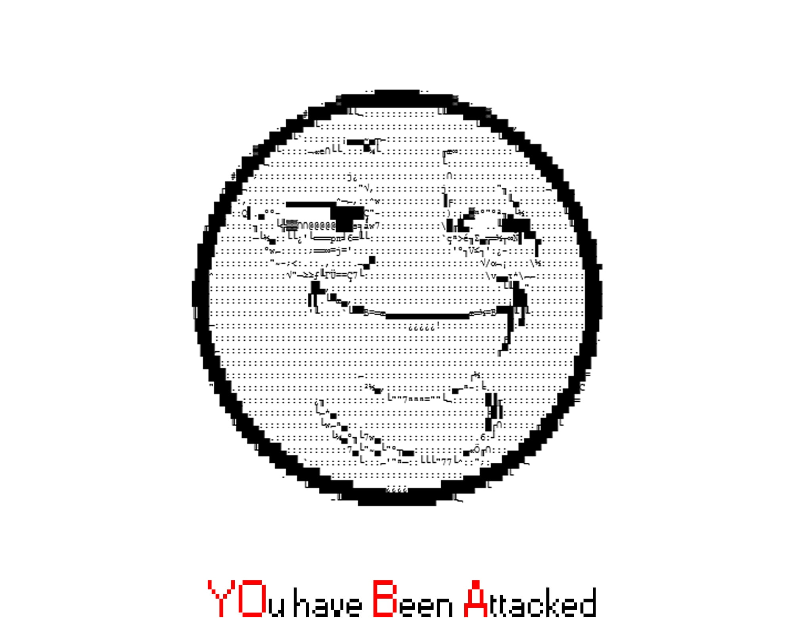

Q&A
Q: Что с сайтом?
A: Его взломали
Q: Кто его взломал?
A: Студенты 231 группы Ульянов Кирилл и 230 группы Газизов Радмил, участники WS по кибербезопасности
Q: Зачем вы это сделали?
A: Наша задача - найти и исправить все уязвимости сайта
Q: Когда сайт начнет работать?
A: Скоро
(для Ильи: старый index.php переименовали в index.old.php)
Q: Можно к вам?
A: Да, пишите в телегу/ватсапп +79274828112
P.S. Дорогая администрация, не стукайте <3